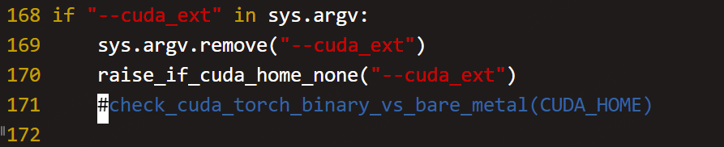

- 由于GLM-130B 工作非常
soild，于是尝试部署验证模型效果 - 其说明非常详细，基本上按照上面的要求来即可。有一些小
trick，于是记录如下：
安装过程
- 先配置虚拟环境，文档中要求
python版本3.9+，这里选择3.9.161
conda create -n llm python=3.9.16
- 安装
cuda过程略，服务器安装版本11.6 安装
torch，查询网址1
python3 -m pip install torch==1.12.0+cu116 torchvision==0.13.0+cu116 torchaudio==0.12.0 --extra-index-url https://download.pytorch.org/whl/cu116 -i http://mirrors.aliyun.com/pypi/simple/ --trusted-host mirrors.aliyun.com
安装
apex，具体参见here，但是过程中，会出现torch与cuda版本不匹配问题，上有人建议remove this check，不得不说很硬核，然后试了下，居然成功了，具体注释的代码行。注：这一步时间比较长。
- 安装
DeepSpeed1
python3 -m pip install deepspeed -i http://mirrors.aliyun.com/pypi/simple/ --trusted-host mirrors.aliyun.com
安装
SwissArmyTransformer1
python3 -m pip install SwissArmyTransformer -i http://mirrors.aliyun.com/pypi/simple/ --trusted-host mirrors.aliyun.com
安装
requirements.txt1
python3 -m pip install -r requirements.txt -ihttp://mirrors.aliyun.com/pypi/simple/ --trusted-host mirrors.aliyun.com
下载模型文件，此处需要填写调查问卷，然后通过邮件获取到
url.txt。- 邮件中建议通过
aria2下载模型，所以先安装aria2，下载链接:1
yum install aria2 -y
- 根据邮件提示下载
checkpoint。由于有60个子文件，所以下载的时候可能需要多次执行。1
aria2c -x 16 -s 16 -j 4 --continue=true -i urls.txt